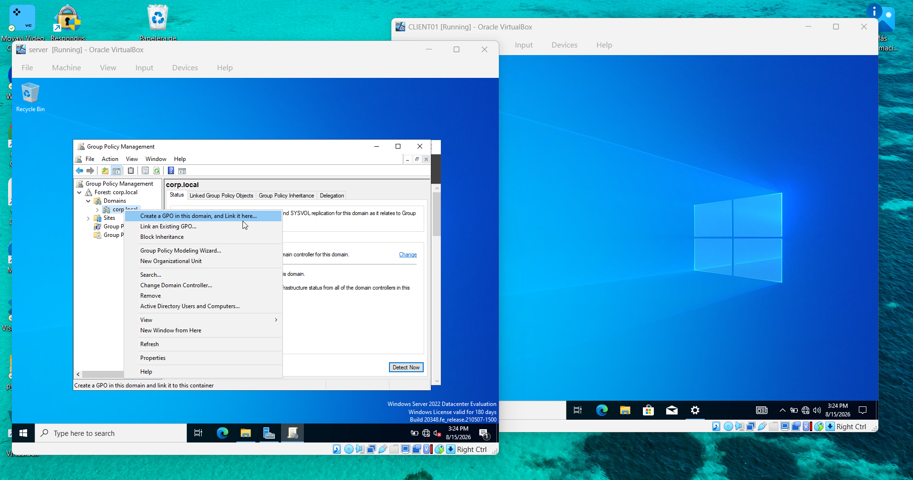
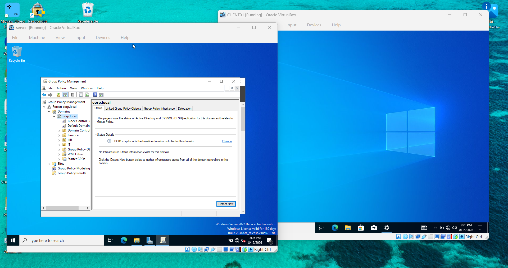
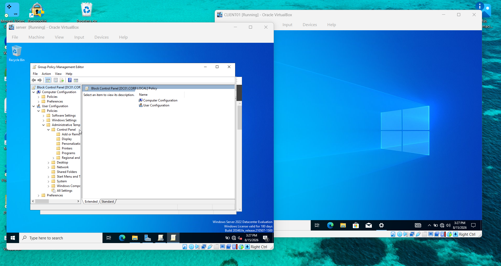
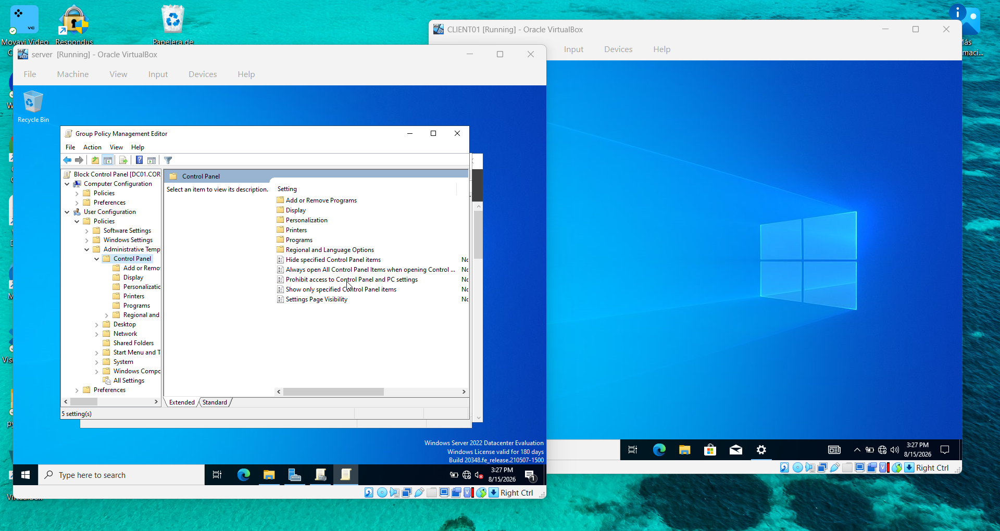
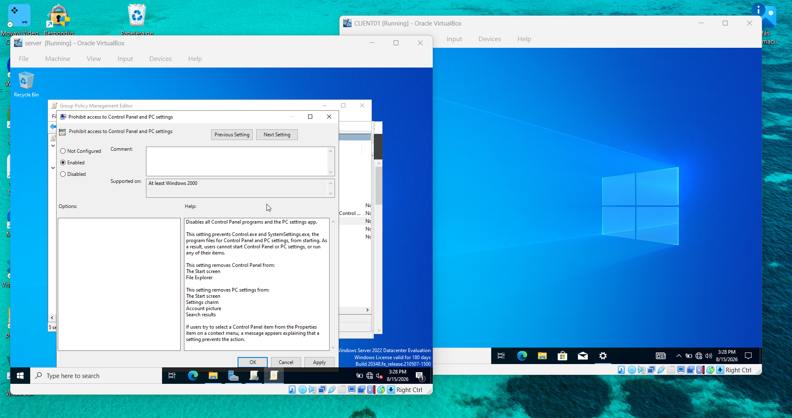
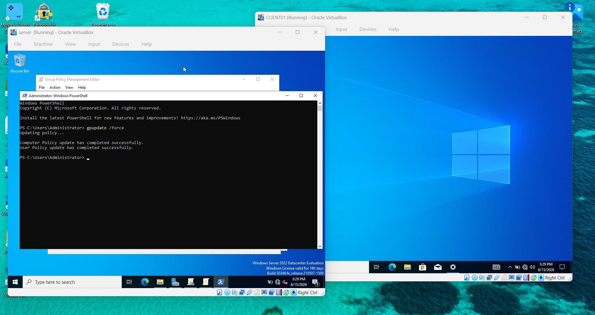
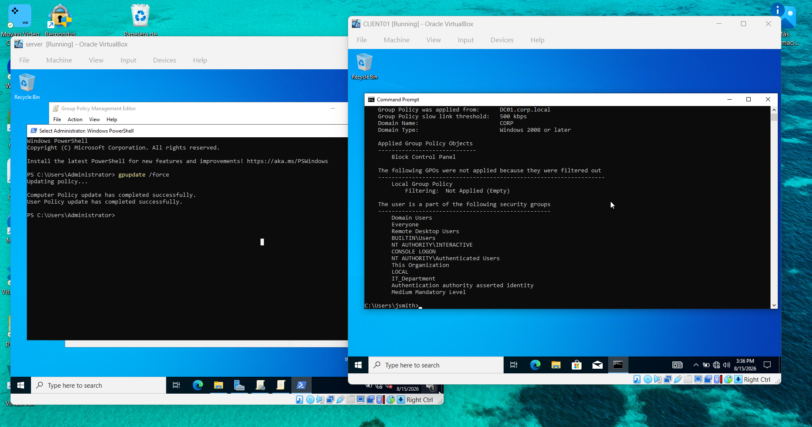
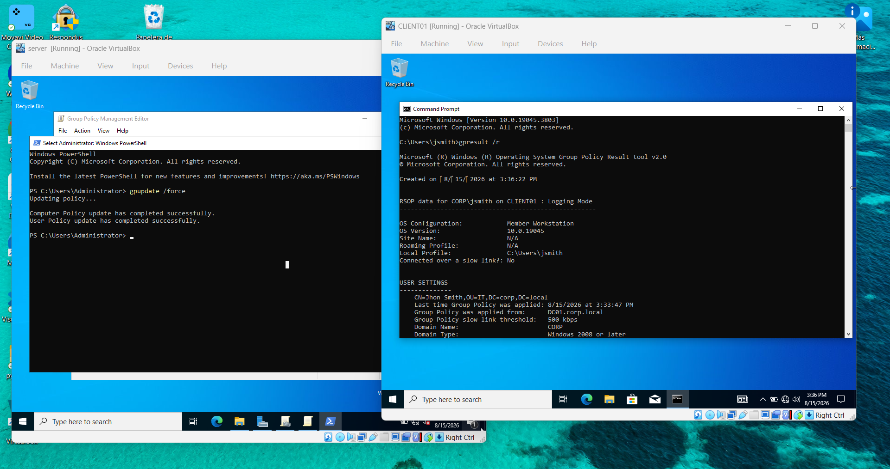

Locking Down Control Panel with a Group Policy Object
Right after getting Remote Desktop working, I moved on to Group Policy — one of the core tools for managing a whole domain of machines from one place. The goal: restrict Control Panel access for a domain user and actually confirm it took effect, not just assume it did.
The scenario: in a real environment, you don't want every user poking around in Control Panel and changing system settings. Instead of doing this machine by machine, a Group Policy Object (GPO) lets you push that restriction out across the domain from DC01. I built one, applied it, and verified it landed correctly on jsmith's account.
// Step 1: Create the GPO and link it to the domain
Opened Group Policy Management on DC01, right-clicked corp.local, and chose "Create a GPO in this domain, and Link it here..."

Named it Block Control Panel. Linking it at the domain level means it applies to every user in corp.local, not just one OU — good for this test, though in a real environment I'd usually scope something like this to a specific OU instead of the whole domain.

// Step 2: Find the right setting
Opened the Group Policy Management Editor and navigated to User Configuration → Policies → Administrative Templates → Control Panel.


// Step 3: Enable the restriction
Opened that setting and switched it to Enabled. The Help panel on the right spells out exactly what it does — worth reading in full before applying anything, since it's easy to assume a setting does one thing when it actually reaches further.

// Step 4: Force the policy to apply immediately
GPOs normally apply on their own refresh cycle, but for testing I don't want to wait. Ran gpupdate /force from PowerShell on DC01.

// Step 5: Verify it actually applied to jsmith
Enabling a setting and confirming it took effect are two different things. I logged into CLIENT01 as jsmith and ran gpresult /r to check.


RSOP data for CORP\jsmith on CLIENT01 : Logging Mode
----------------------------------------------------
USER SETTINGS
--------------
Last time Group Policy was applied: 8/15/2026 at 3:33:47 PM
Group Policy was applied from: DC01.corp.local
Applied Group Policy Objects
-----------------------------
Block Control Panel
That confirmed it: the GPO applied cleanly to jsmith, from the right domain controller, with no filtering issues blocking it. From there I could have opened Control Panel as jsmith to see the restriction in action, but gpresult already gave me the proof I needed.
// What I took away from this
- Creating a GPO and having it actually apply are two separate milestones. gpupdate /force pushes it out — gpresult /r is how you prove it landed.
- Reading the Help text on a policy setting matters. "Prohibit access to Control Panel" sounds narrow, but it actually strips access from several different entry points at once.
- Domain-level linking is fast for testing, but in a real environment I'd scope this to a specific OU so it only touches the users it's meant for.
- gpresult /r is a genuinely useful troubleshooting command beyond just this test — it also shows security group membership and whether any GPOs got filtered out, which is exactly what you'd check first if a policy "isn't working" for a user.